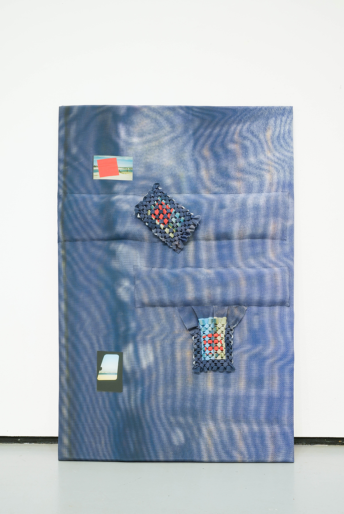

Emma Safir
Emma Safir, Raising Glitches (I, II, III, IV)2021, digital collage printed on silk and vinyl, spandex, smocking, appliqué, pine, upholstery foam, silk thread, and flashe paint, 37 × 57 × 1.5″"> Emma Safir, Raising Glitches I
2021, digital collage printed on silk and vinyl, spandex, smocking, appliqué, pine, upholstery foam, silk thread, and flashe paint, 37 × 57 × 1.5″"> Emma Safir, Raising Glitches II
2021, digital collage printed on silk and vinyl, spandex, smocking, appliqué, pine, upholstery foam, silk thread, and flashe paint, 37 × 57 × 1.5″"> Emma Safir, Raising Glitches III
2021, digital collage printed on silk and vinyl, spandex, smocking, appliqué, pine, upholstery foam, silk thread, and flashe paint, 37 × 57 × 1.5″">
 Emma Safir, Raising Glitches (I, II, III, IV)
Emma Safir, Raising Glitches (I, II, III, IV)2021, digital collage printed on silk and vinyl, spandex, smocking, appliqué, pine, upholstery foam, silk thread, and flashe paint, 37 × 57 × 1.5″"> Emma Safir, Raising Glitches I
2021, digital collage printed on silk and vinyl, spandex, smocking, appliqué, pine, upholstery foam, silk thread, and flashe paint, 37 × 57 × 1.5″"> Emma Safir, Raising Glitches I
2021, digital collage printed on silk and vinyl, spandex, smocking, appliqué, pine, upholstery foam, silk thread, and flashe paint, 37 × 57 × 1.5″"> Emma Safir, Raising Glitches IV
2021, digital collage printed on silk and vinyl, spandex, smocking, appliqué, pine, upholstery foam, silk thread, and flashe paint, 37 × 57 × 1.5″"> Emma Safir, Raising Glitches III
2021, digital collage printed on silk and vinyl, spandex, smocking, appliqué, pine, upholstery foam, silk thread, and flashe paint, 37 × 57 × 1.5″">
Emma Safir (b. 1990, NYC)
Emma Safir (pronounced sapphire) navigates the opacity of intersubjective experience and the transience of memory through material exploration and manipulation. Convex and soft, absorbing and emanating light, her works employ illusion in order to both disorient and placate.
Emma Safir (pronounced sapphire) navigates the opacity of intersubjective experience and the transience of memory through material exploration and manipulation. Convex and soft, absorbing and emanating light, her works employ illusion in order to both disorient and placate.
emmasafir.com
@grem.jpg
@grem.jpg